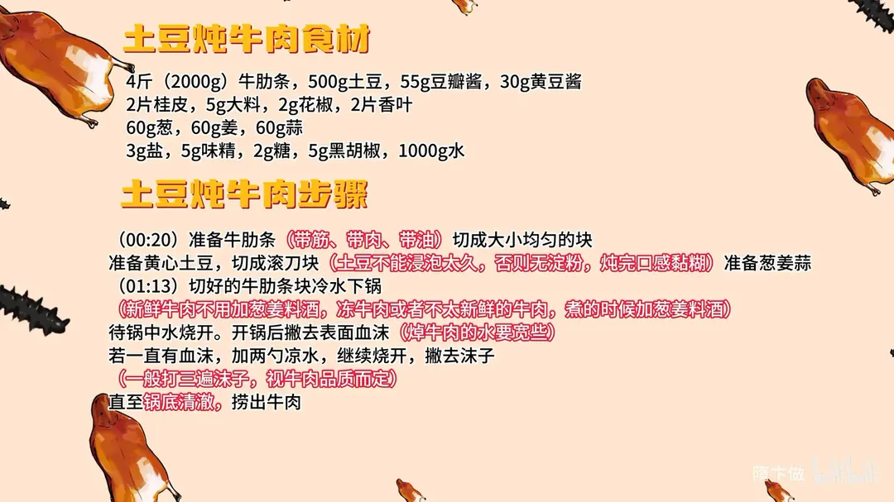
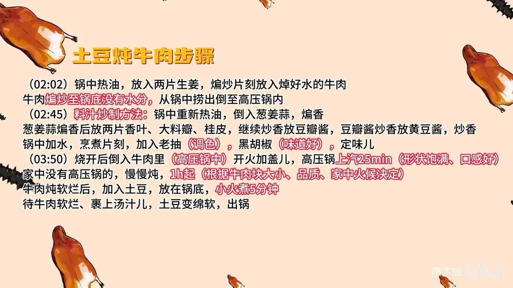

土豆炖牛肉
隋卞一做。牛肋条 2000g 冷水下锅打净血沫，煸干水分后移入高压锅；葱姜蒜配豆瓣酱、黄豆酱炒成料汁，添 1000g 水压 25 分钟，再下土豆小火煮 5 分钟。
原视频：https://www.bilibili.com/video/BV1Ej42197Bg
食材
牛肋条、土豆、豆瓣酱 等 17 样
| 类别 | 用料 | 用量 |
|---|---|---|
| 主料 | 牛肋条 | 4斤（2000g） |
| 主料 | 土豆 | 500g |
| 调料 | 豆瓣酱 | 55g |
| 调料 | 黄豆酱 | 30g |
| 配料 | 桂皮 | 2片 |
| 配料 | 大料 | 5g |
| 配料 | 花椒 | 2g |
| 配料 | 香叶 | 2片 |
| 配料 | 葱 | 60g |
| 配料 | 姜 | 60g |
| 配料 | 蒜 | 60g |
| 调料 | 盐 | 3g |
| 调料 | 味精 | 5g |
| 调料 | 糖 | 2g |
| 调料 | 黑胡椒 | 5g |
| 调料 | 水 | 1000g |
| 调料 | 老抽 | 适量（调色） |
步骤
- 切配：牛肋条（带筋、带肉、带油）切成大小均匀的块；黄心土豆切成滚刀块，土豆不能浸泡太久，否则淀粉流失、炖完口感黏糊；备好葱姜蒜。
- 焯水：切好的牛肋条冷水下锅。新鲜牛肉不用加葱姜料酒，冻牛肉或不太新鲜的牛肉，煮的时候加葱姜料酒。水烧开后撇去表面血沫，炖牛肉的水要宽些；若一直有血沫，加两勺凉水继续烧开、撇去沫子，一般打三遍沫子，视牛肉品质而定，直至锅底清澈，捞出牛肉。
- 煸牛肉：锅中热油，放入两片生姜，煸炒片刻放入焯好水的牛肉，煸炒至锅底没有水分，从锅中捞出倒入高压锅内。
- 炒料汁：锅中重新热油，倒入葱姜蒜煸香，再放两片香叶、大料瓣、桂皮继续炒香；放豆瓣酱，豆瓣酱炒香后放黄豆酱炒香；锅中加水，烹煮片刻，加入老抽调色、黑胡椒提味，定味儿。
- 高压炖：烧开后倒入高压锅中的牛肉里，开火加盖，上气后压 25 分钟（形状饱满、口感好）。家中没有高压锅的慢慢炖，1 小时起，视牛肉块大小、品质、家中火候而定。
- 下土豆：牛肉炖软烂后加入土豆，放在锅底，小火煮 5 分钟；待牛肉软烂、裹上汤汁儿，土豆变绵软，出锅。
讲解要点
难度：★★☆☆☆（几乎不会失败，关键在打沫和炖的时间）
为什么这么做
- 选牛肋条：带筋、带肉、带油，炖软后既有胶质又香，牛油还能让汤汁变厚重。
- 冷水下锅、有沫就打：冷水慢慢升温，血沫才凝得出来；等沫子煮进肉里就撇不掉了，所以焯水的水要宽、动作要快。
- 新鲜牛肉不用葱姜料酒：肉质好本身不腥，两片姜就够了；冻肉或不新鲜的才补葱姜料酒。
- 焯完回锅煸干水分：把表面水汽炒掉，后面吸汤汁、吸味才足，这也是只用两片姜的原因。
- 酱要先炒透再加水：豆瓣酱、黄豆酱炒出香，才没有生酱味；老抽上色、黑胡椒提味。
- 高压锅 25 分钟：压力下肉形饱满、口感好；没有高压锅就小火慢炖，最少一小时。
- 土豆最后下、小火 5 分钟：土豆埋在锅底吸汁，煮久就散；土豆少泡水，泡久了淀粉流失、炖完发黏。
容易翻车
- 焯水的水不宽、沫子撇不及时，沫子糊在肉上，汤浑肉腥。
- 土豆泡水太久，淀粉流失，炖完汤汁黏糊、土豆不成块。
- 豆瓣酱、黄豆酱没炒透，成菜有生酱味。
- 土豆下得太早或大火久煮，会碎在汤里。
- 用普通锅炖的时间不够，牛肉嚼不动。
热评补充
- 新鲜牛肉焯水别太久，水开顶多三分钟，焯完的汤可以留着炖肉。
- 香料别多，提个味就行，在此基础上加一点小茴香和一个草果，味道更好。
- 豆瓣、黄豆酱主要上色、增复合味，要把酱里的水汽炒干；怕糊就用小火炒。做好后泡一两个小时，味道更透。
原片尾卡


原片文案
AI 字幕校准稿
上次我们做完番茄炖牛腩之后，后台就有观众说了，吃西红柿过敏。今天教你们一个土豆炖牛肉。谁会西红柿过敏？就是你自己想吃吧。但这是小孩都能随便吃的土豆炖牛肉版本。
牛肋条肉，就是带筋、带肉、带油的那部分。这个牛肉品质不错，中间那个还是油花，不是筋膜，漂亮。切成块，大小您在家随意。
土豆切滚刀块就行。削好皮的土豆少泡水，泡时间太长，里边就没有淀粉了，做完之后口感不太好，淀粉就不会糊化了。葱姜切好，前面的准备工作就完了。
切好的牛腩块搁在水里面焯，冷水下锅，让它烧开就行。如果买的是很新鲜的牛肉，葱姜料酒都不用放；如果是冻牛肉或者不太新鲜的，一定要少放一点。等水慢慢烧开，上面有大血沫子，要给它撇干净，所以焯牛肉的水要宽一些。这个打沫子可不能等，有沫子就赶紧打，过一会不打就全煮到肉上面去了。
感觉开锅了，上面打差不多了，来勺水再滚一下，可能还会有沫子。一般打三遍就算干净，还是看买的肉的品质。可以了，捞。
锅里边放点油，放上两片姜，把焯过水的牛肉回锅炒一下。这一步是为了把焯过水的牛肉表面水分炒干，炒出一部分牛肉的水汽之后，吸味的时候才会吸得更足一些。全程大火，炒到下边没有水了就可以。不用烹料酒，就这两片姜就解决所有的问题了。倒到高压锅里边。
锅里边重新加点底油，把葱姜蒜倒进去煸香，加香料：两片香叶、大料瓣、桂皮。炒香之后放豆瓣酱，豆瓣酱炒香再放黄豆酱，往里边加水，加点老抽调调颜色。黑胡椒一定要放，味精、白糖、一点盐。烧开之后倒到牛肉里边。
开火加盖，上气压 25 分钟。如果家里没有高压锅，小火慢炖，最快也得一个小时，得根据牛肉切的块大小和牛肉的品质。还是建议用高压锅，压出来形状比较饱满，口感特别好。
关火掀盖，把土豆倒进去，埋在里边，小火煮就行。你看那个牛肉，完全把汤汁都吸进去了。土豆也绵了，出锅。
他们选的这个牛肉部位非常非常好，又有肉又有筋又有油，完全软烂了，一点都不难嚼，牛肉的香味特别足，炖的时间也够。里面的牛油让整个汤汁变得特别厚重，土豆也软、面，吸汤汁，味道吸得特别足，又让汤汁变得粘稠，下面或者拌米饭都相当好吃。